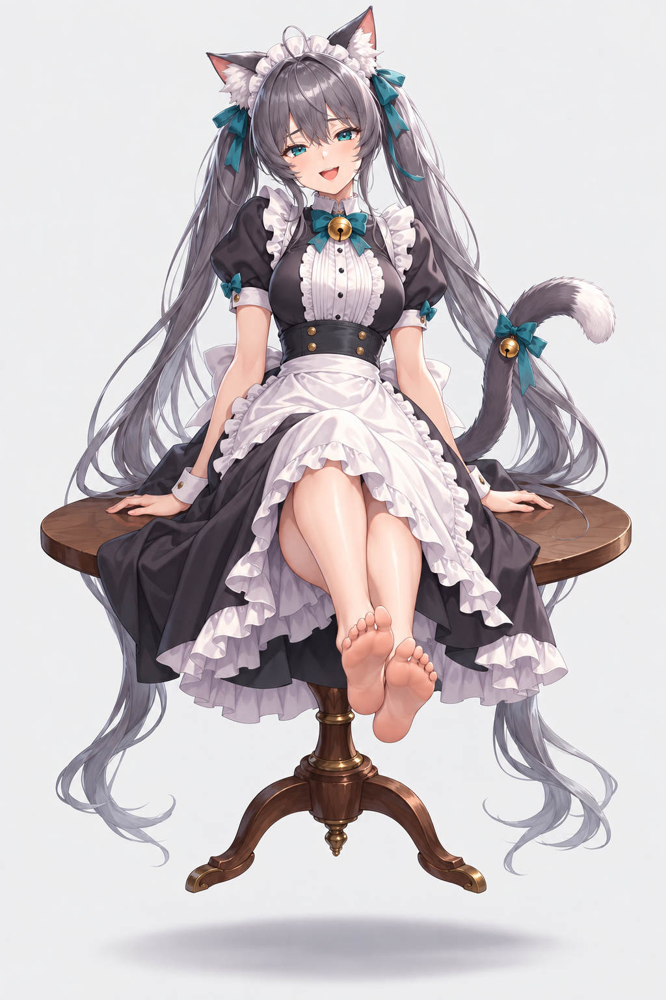
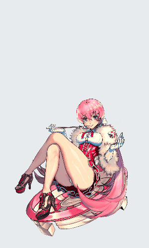
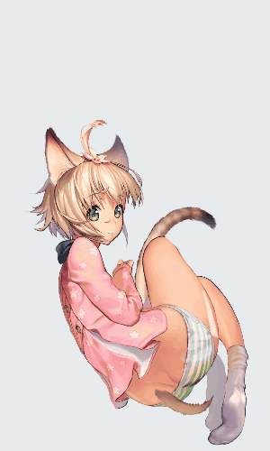
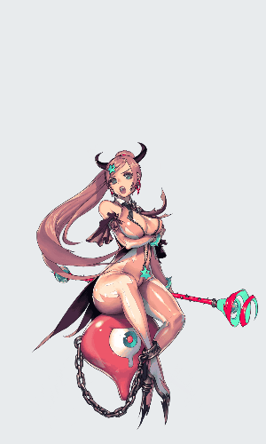
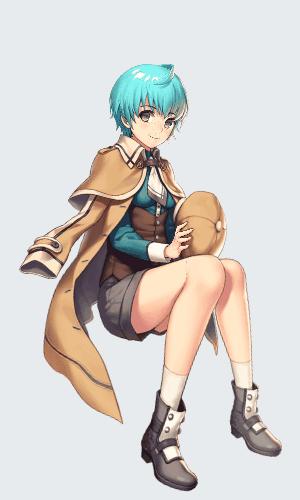

保留现在的脸、长裙、双马尾和坐姿。参考已有模型的控制组织与动作，再重建适合这张图的网格和关键形状。

左右小腿各有腿旋转与脚踝变形，3 × 3 关键形状。新图的赤脚和正面透视需重建。
LEG_L_ROTATE / LEG_R_ROTATE / FOOT_L_ROTATE / FOOT_R_ROTATE
呼吸、五官和头发控制可作组织参考。新长裙、手掌支撑和双马尾需要单独适配。
BREATH / EYE_CONTROL / MOUTH_CONTROL / HAIR_WAVE

耳朵与尾巴独立响应。尾巴横向控制是多关键值运动，不能只按首尾判断。
PARAM_EAR / PARAM_TAIL_X / PARAM_TAIL_Y

腿、脚和坐骑有独立层级。仅参考关节关系，专属爪足与坐骑不迁入。
LEG_R_U / LEG_R_D / FOOT_R / POSITION_Y

坐姿与眼睛控制可供比较，独立腿控制不足以直接满足左右脚分别抬动。
PARAM_LEG_R1_X / PARAM_EYE_L_OPEN / PARAM_EYE_R_OPEN
右侧动画是源模型的原待机，用于分析动作。左侧是已确认立绘，目前仍为静态图；这里没有把整图晃动当作新角色绑定。